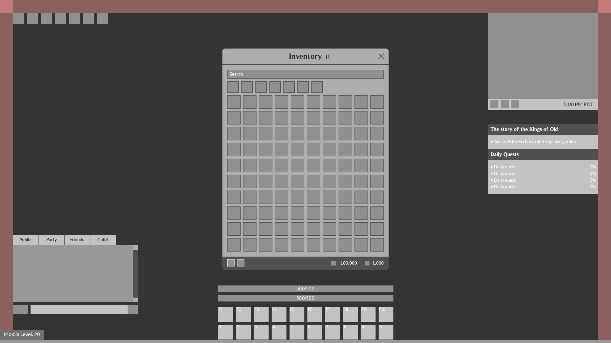
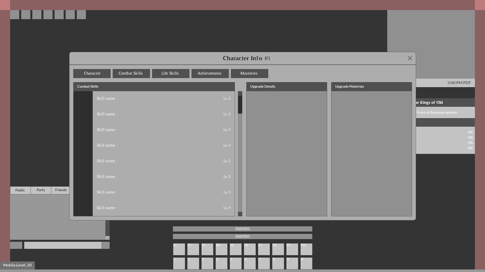
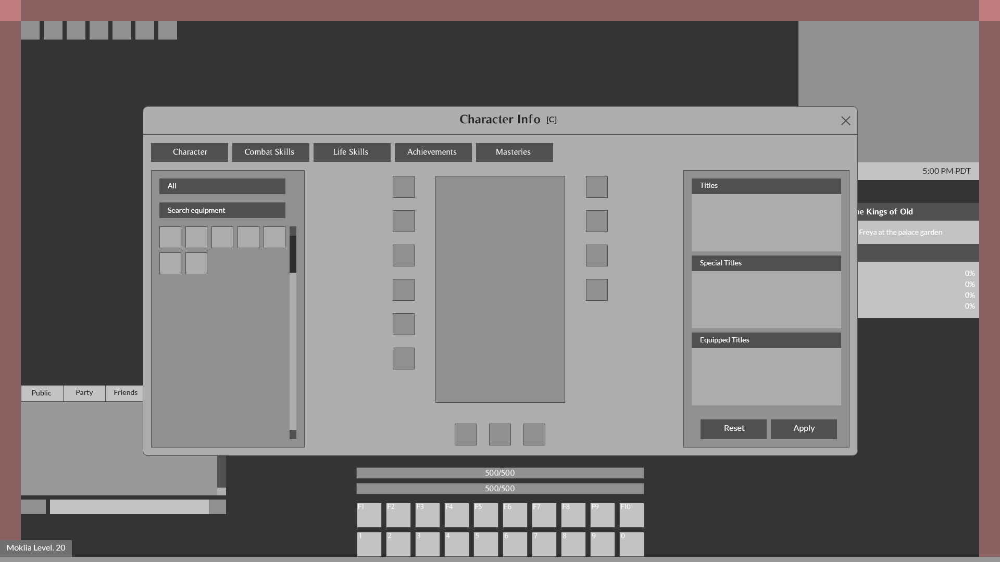
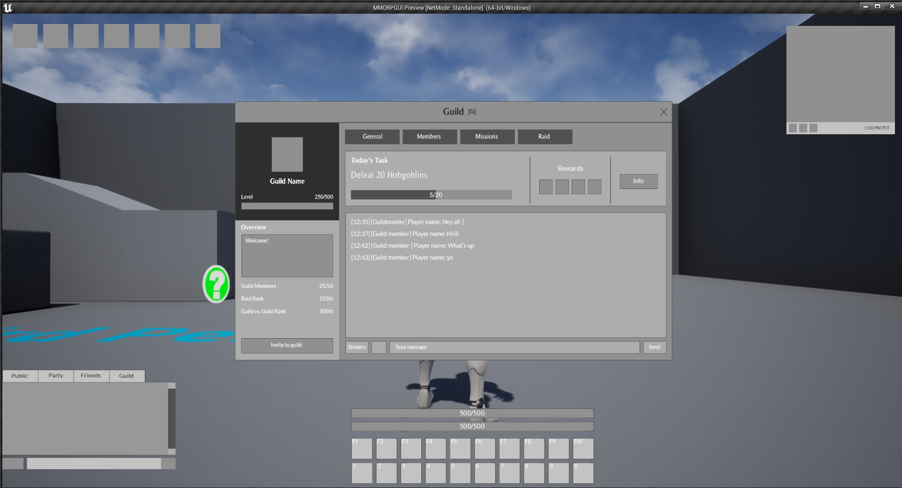

Game Type: Fantasy MMORPG
UI Software: Photoshop, Affinity Designer
Game Engine: Unreal Engine 5
The Process
I began my process determining target platform, audience and game type.
I researched and gathered references from various MMORPGs I’ve personally played, as well as studying the game design of popular MMORPGs.
Then I created a user flow to map out the experience, before condensing it down to a few screens.
From here on I went through a constant iterative process. I found myself not only iterating during wireframing, but also during high-fidelity design to
flesh out the UX. In addition, icons were frequently worked on to maximize quality and to align with the art direction.
I tested early wireframes in Unreal Engine 4 (before Unreal Engine 5 officially released) to make size and spacing iterations.

Early Inventory Wireframe

Early Skills Menu Wireframe

Early (discarded) Character Menu Wireframe

Discarded Guild Menu Wireframe in Unreal Engine 4